Rickshaw Examples
Bare minimum to get a graph on the page with a couple of points.
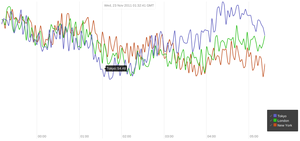
Basic lines with a legend and x-axis ticks and labels. Toggle lines on and off by clicking checkmarks.
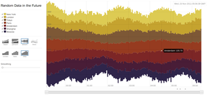
Dig into continuously updating data. Change line interpolations, zoom in on the x-axis, apply smoothing, stack and un-stack, drag and drop to re-order the stack, toggle data on and off.
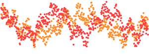
Basic scatter plot with two overlapping series.
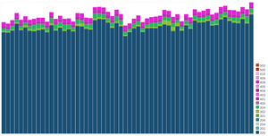
Requests per second by HTTP status as stacked bars. Colors come from a deterministic palette that can carry across graphs.
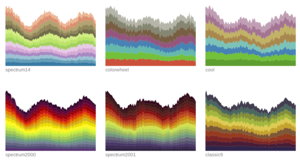
A number of color schemes are built in. You can specify your own too.
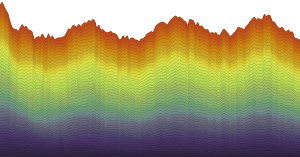
Interpolate color schemes for graphs with many series.
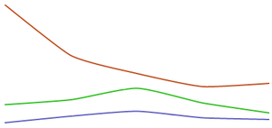
Ask Rickshaw to fetch data via AJAX, rather than specifying in the constructor. There's a JSONP impelementation too.
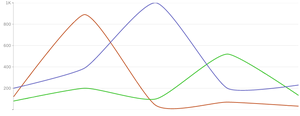
Draw y-axis tick marks and grid lines with abbreviated numbers.
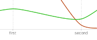
Add custom values and custom formatting along the x-axis.
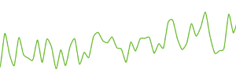
Fixed-size time window, useful for real-time graphs with socket.io.
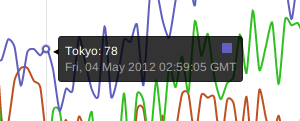
Send a custom formatter callback for finer control in hover details.
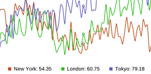
Subclass hovers to provide an alternate legend at the bottom of the graph.
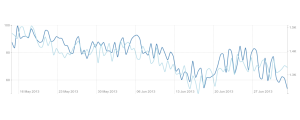
Two series normalized with different scales, with two different scaled Y-axis.

One series drawn using log and absolute scale on one graph.
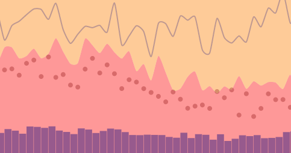
Bars, lines, area, and scatterplot graphs all in one setting.